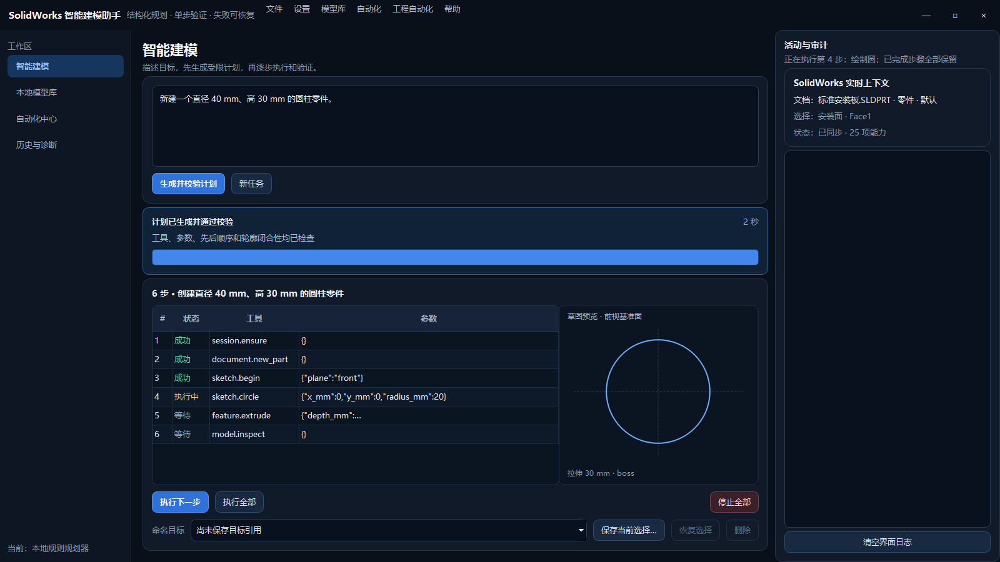
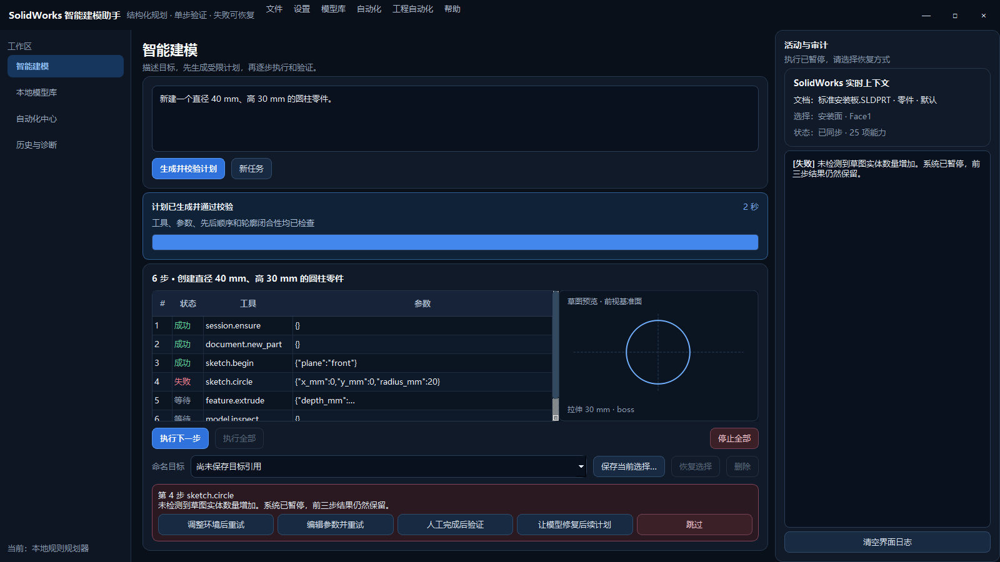
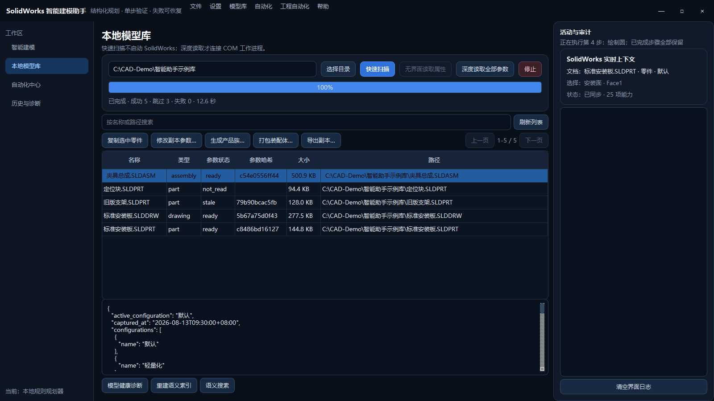
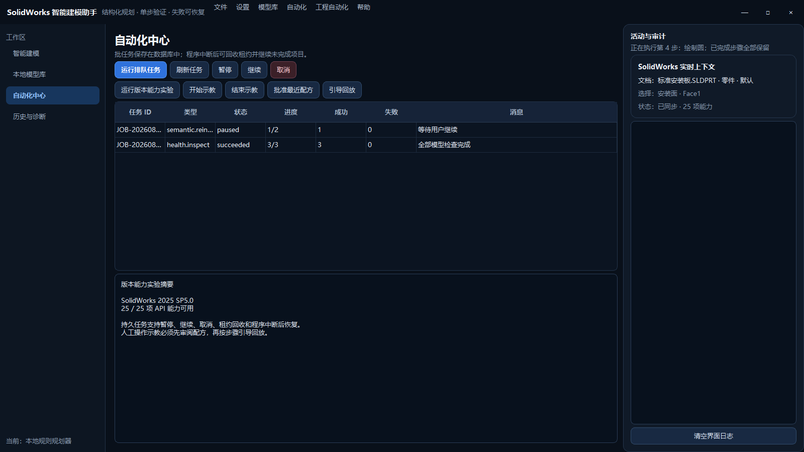

01
需求更容易表达
用中文描述尺寸、形状和目标，不必先记住每一个 API 名称或宏命令。
把自然语言、模型库与 SolidWorks 官方接口连接起来，让建模过程变得可理解、可检查、可暂停、可恢复。

CAD 自动化真正困难的地方，是选择对象会变化、操作有先后关系、失败后还要知道停在哪里。助手把这些问题放进同一条可观察的工作流。
用中文描述尺寸、形状和目标，不必先记住每一个 API 名称或宏命令。
先展示结构化计划，再逐步执行；每一步都有状态、参数和验证结果。
成功步骤保留，问题步骤暂停，可重试、改参数、人工处理或让模型重排后续。
本地模型按哈希、参数、配置和引用关系建立索引，为派生与批处理提供基础。
大模型负责提出计划，本地规则和 SolidWorks 实际状态负责决定“能不能做、做完没有”。
主界面只保留日常工作所需的四个入口；模型服务、版本实验、装配与工程图等专业能力收纳在菜单中。
以“新建一个直径 40 mm、高 30 mm 的圆柱零件”为例，普通用户只需要表达目标；系统负责把目标拆成受控步骤。
写清楚对象、关键尺寸和希望得到的结果。
系统检查工具是否允许、参数是否合理、先后顺序是否成立。
确认草图轮廓、拉伸方向、步骤数量和说明。
建议首次使用“执行下一步”，复杂操作始终保留人工观察。
系统读取模型状态；用户再决定保存、继续派生或结束任务。
优先写明确尺寸和基准，例如“前视基准面”“盲孔深度 12 mm”。
关注选择对象、尺寸单位、凸台/切除方向和预期实体数量。
拆成多个可验证阶段，比一次性生成很长的命令序列更可靠。
SolidWorks 操作依赖前序特征、选中对象和模型拓扑。系统通过前后快照与后验条件，确认当前步骤是否真的改变了模型。
把“刚才选中的面”转成可恢复的目标引用，拓扑变化后如果失效会明确提示，不盲猜。
每步前后都从 SolidWorks 读取当前状态，避免使用已经过期的选择或缓存。
停止会阻止后续步骤并终止助手工作进程；已被 SolidWorks 接收的原子调用仍需事后核对。
简单重复任务可以连续执行；新模型、复杂装配或不熟悉的特征，建议保持“执行一步—检查一步”。

当前版本界面 · 演示失败
当前版本界面 · 演示数据扫描分成两层，避免为了列出文件就启动 SolidWorks。只有需要特征、尺寸、配置或引用关系时，才进入深度读取。
什么时候必须打开 SolidWorks？ 快速扫描不需要；当前深度读取通常由独立 SolidWorks COM 工作进程完成。配置合法的 Document Manager 许可证后，可在部分元数据场景减少界面启动，但不能替代全部几何和特征验证。
系统不会把所有文件都当成同一种“复制”。零件、装配体、工程图的引用关系不同，安全路线也不同。
| 方式 | 适合场景 | 系统如何保护结果 | 当前状态 |
|---|---|---|---|
| 原样复制零件 | 保留结构与参数，生成独立文件 | 不覆盖目标；复制前后核对哈希 | 已实现 |
| 参数派生零件 | 修改指定尺寸或属性，形成新规格 | 先复制到临时区，只改副本；重建、保存、重开再发布 | 已实现 |
| 产品族 | 同一设计生成多个配置和规格组合 | 以配置矩阵驱动，稳定尺寸身份和属性映射 | 已实现 |
| Pack and Go | 装配体连同所有引用一起发布 | 调用 SolidWorks 官方 API，临时目录验证后原子发布 | 已实现 |
| 安全格式导出 | STEP、STL、IGES、PDF、DXF、DWG 等交付 | 格式白名单、不覆盖、检查非空输出和哈希 | 已实现 |
| 复杂零件重绘 | 需要理解圆角、曲面、放样、孔向导等完整设计意图 | 当前仅开放基础草图、拉伸和旋转；不支持时明确拒绝 | 受限 |
源文件默认保持不变；装配体不做普通文件复制，必须使用 Pack and Go 保留引用完整性。
高级功能从顶部“工程自动化”菜单进入，主界面保持简洁。
读取组件、固定状态、缺件和干涉；使用持久引用创建受控配合。
主视、俯视、右视、等轴测、剖视、BOM、自动气泡和模型尺寸导入。
许可证和版本允许时读取 PMI；同时执行本地可解释 DFM 规则。
工程图 PDF/DWG 与模型交换格式导出，结果必须非空并留下哈希。

当前版本界面 · 演示数据人工示教用于捕获步骤和上下文，生成的是候选配方。它必须经过审阅和批准，默认只提供逐步引导。
文档变化、选择上下文、关键操作以及可恢复的对象引用。
以步骤清单提示用户在 SolidWorks 中操作，并在每个阶段检查条件。
不会把所有界面点击直接转换成未经审查的写操作，也不会绕过工具白名单。
企业标准操作、固定检查流程、重复准备动作，以及“机器不稳定时如何人工接管”的经验。
系统不让大模型直接控制 SolidWorks。模型输出计划，本地运行时校验计划，独立 COM 工作进程串行执行，C# Add-in 只读采集实时上下文。
面向用户的计划、模型库、任务和诊断界面。
所有 SolidWorks 写操作在单线程 COM 环境中按顺序执行。
官方 API 完成建模；Task Pane 提供应用内入口和只读现场信息。
模型只能选择已登记工具并提交明确参数，不能随意执行命令字符串。
执行后读取实体、特征、尺寸和文档状态，用结果判断成功。
SolidWorks 调用在独立进程中串行执行，停止和故障不会锁死整个界面。
对关键面、边和基准保存可恢复引用；失效时显式报错，不猜测替代对象。
批处理为每个任务项保留唯一键、租约和心跳，减少重复执行。
复制、派生、导出先在临时区完成，检查文件、哈希和重开结果后再发布。
AI 像“提出步骤的工程助理”，本地规则像“工艺审核员”，SolidWorks 的实际结果才是最终验收依据。
模型服务 API Key 使用 Windows DPAPI 按当前用户加密；日志不记录明文密钥。
派生修改副本，装配使用 Pack and Go；目标已存在时默认拒绝覆盖。
高风险动作保留确认和单步入口；失败后由用户选择恢复路线。
没有许可证、COM 组件或版本证据时显示不可用，不伪装成已成功。
计划、任务、结果和恢复决策写入本地记录，方便定位问题。
系统不是 PDM，也不是无人监管的通用宏执行器；复杂未知特征不会盲目生成。
以下数字来自 2026-08-10 的项目验证报告，不是预测值。报告区分“自动化通过”“实机通过”和“外部条件未具备”。
优先选择规则清楚、结果可检查、重复频率高的场景；复杂创新设计仍以工程师判断为主。
任务越能清楚描述“输入、步骤、预期结果”，越适合自动化；越依赖隐含设计意图，越需要人工主导。
在 Windows 电脑安装桌面端；如需 SolidWorks 内嵌入口，再注册 C# Add-in。
在设置中选择服务商、地址、模型和 API Key；凭据按当前 Windows 用户加密。
启动受支持版本，检查右侧实时上下文是否显示活动文档和能力状态。
先做快速扫描；选择少量代表文件进行深度读取，确认参数结果。
输入简单任务，检查计划和预览，逐步执行并观察 SolidWorks 模型变化。
Windows 10/11、SolidWorks、可用模型服务；开发环境要求 Python 3.11+。
建议使用副本或专用夹具，核对停止、恢复、重开验证和目标目录保护。
重新输入 API Key；DPAPI 加密内容不能直接跨 Windows 用户解密。模型库可重新扫描建立。
推荐试运行：先完成“快速扫描一个测试目录”和“逐步生成一个简单圆柱”两条路线，再启用产品族、装配体、工程图和批处理。
从一句自然语言，到可审阅计划、单步执行、结果验证、失败恢复，再到模型资产持续复用。
本报告基于 v3.0.0 当前源码、界面与 2026-08-10 验证记录整理。界面截图使用隐私安全的演示数据。